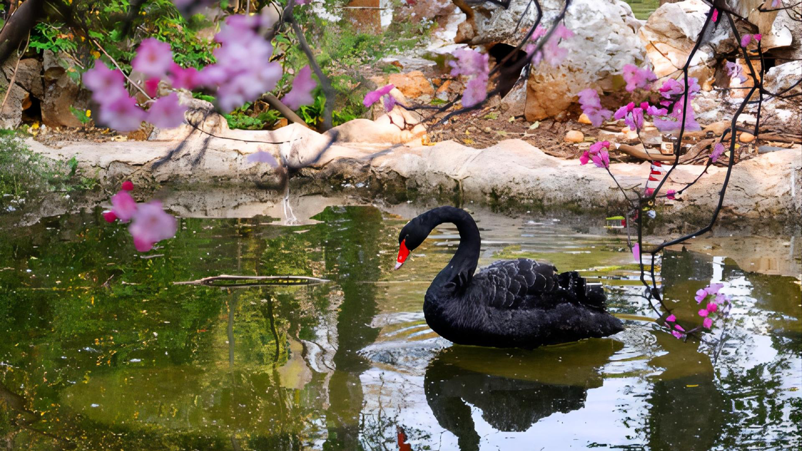
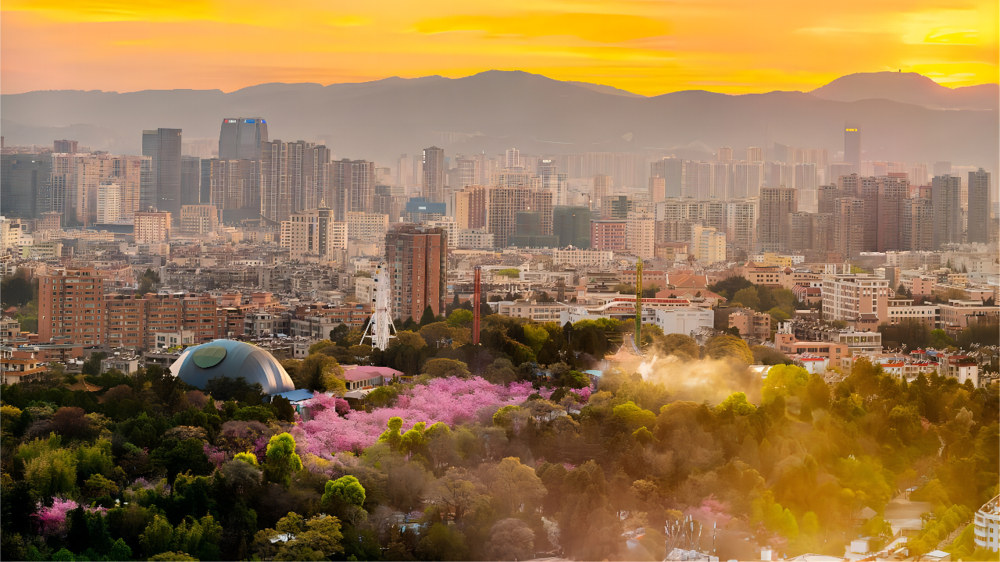
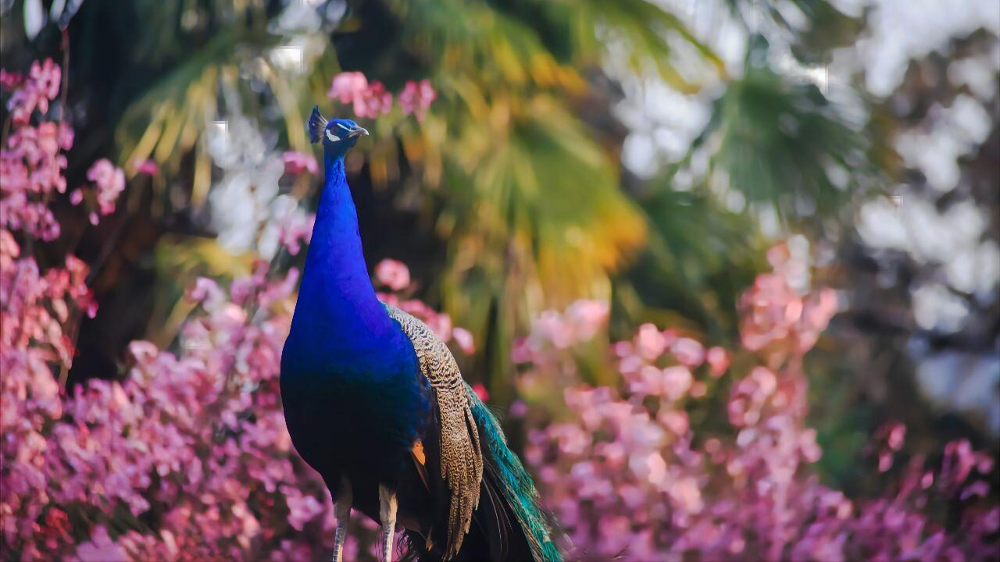
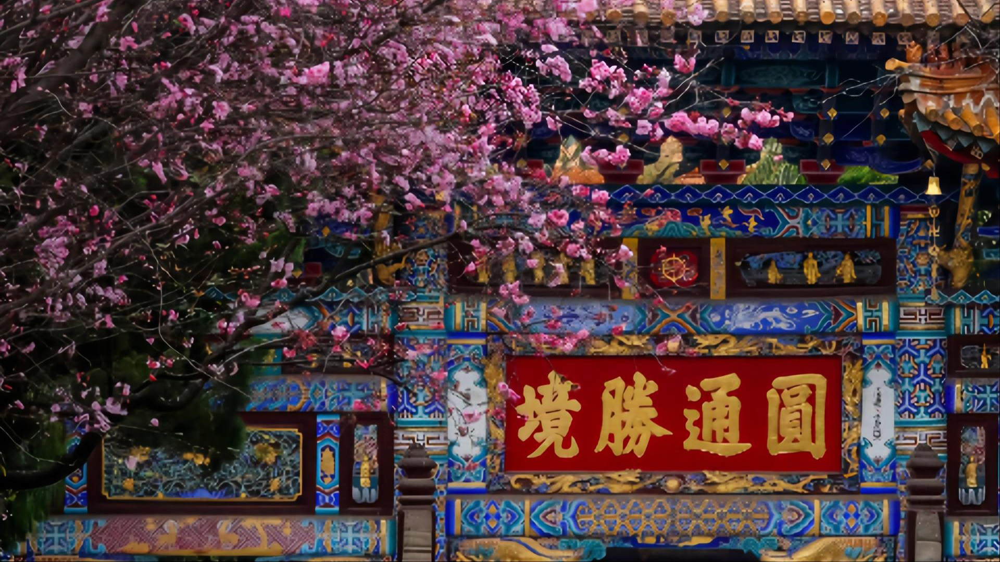

云南大学
圆通山位于昆明市中心，形似一片柳叶，东西长而南北窄，面积约26公顷，是昆明观赏内容丰富、游人多的公园。其中动物、古寺，花湖、犹为吸引人。
历史悠久、名扬中外的“圆通花潮”景观位于圆通山（昆明动物园）中部，分布在高低错落的山麓之上，由樱花区和海棠区组成，连片成林。由于樱花和海棠的花期、花色较为接近，所以大家都习惯统称为樱花。
阳春三月，登临圆通山，踏春赏花，是昆明人的传统习俗。春日阳光灿烂，穿过花间倾泻下来，花儿变得通透、斑驳，很有层次感。美丽的花儿吸引了人们的眼睛，视野里的景致令人目不暇给。几乎人人都不用放弃用手机记录美景的机会，还有很多身背“长枪短炮”的人们，捕捉着一幅又一幅优美的画面。盛开的花儿、红红的花骨朵，密密实实地聚合在枝头，从哪个角度看都是极美的。尤其在“三八”妇女节期间，昆明人倾城出动，涌向圆通山，形成了蔚为大观的花潮人海。著名散文家李广田先生于1963年发表在《人民日报》上的著名散文《花潮》，留下了“春光似海，盛世如花”的名句，使“圆通花潮”更加享誉海内外。
云南大学地球科学学院@2021~2022